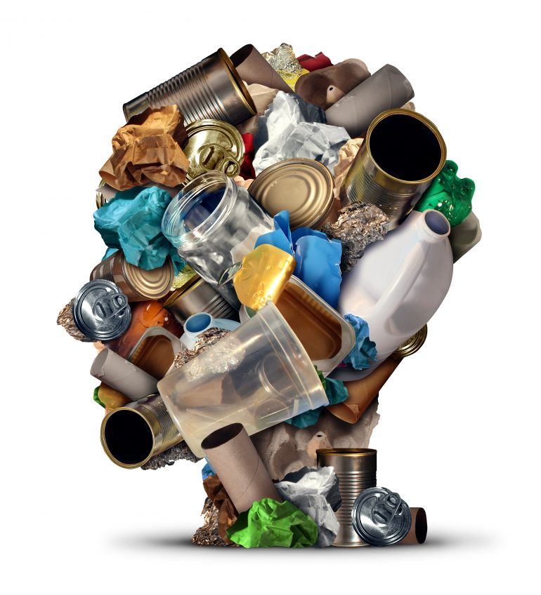
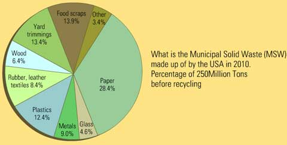
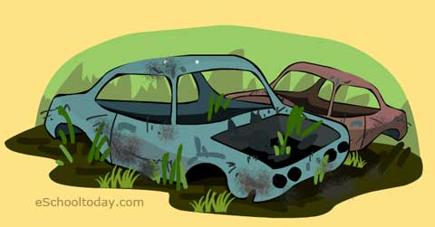

Generally, waste could be liquid or solid waste. Both of them could be hazardous. Liquid and solid waste types
can also be grouped into organic, re-usable and recyclable waste. Hazardous or harmful waste are those that potentially threaten public health or
the environment. Such waste could be inflammable (can easily catch fire), reactive (can easily explode), corrosive (can easily eat through metal) or
toxic (poisonous to human and animals). In many countries, it is required by law to involve the appropriate authority to supervise the disposal of such
hazardous waste. Examples include fire extinguishers, old propane tanks, pesticides, mercury-containing equipment (e.g, thermostats) and lamps
(e.g. fluorescent bulbs) and batteries.
Organic waste comes from plants or animals sources. Commonly, they include food waste, fruit and vegetable peels, flower trimmings and
even dog poop can be classified as organic waste. They are biodegradable (this means they are easily broken down by other organisms over time and
turned into manure). Many people turn their organic waste into compost and use them in their gardens.
Source of Waste
Municipal sources of waste:
This includes trash or garbage from households, schools, offices, market places, restaurants and other public places.
They include everyday items like food debris, used plastic bags, soda cans and plastic water bottles, broken furniture, grass clippings,
product packaging, broken home appliances and clothing.

Medical sources of waste:
Medical waste, normally refers to waste produced from health care facilities, such as hospitals, clinics, surgical theaters, veterinary
hospitals and labs. They tend to be classified as hazard waste rather than general waste.
Items in this group include surgical items, pharmaceuticals, blood, body parts, wound dressing materials, needles and syringes
End-of-life Automobiles::

When cars are all old and not working again, where do they end up? Many people just leave them to rust in the fields, but there is a better way to
deal with them. In many cities, these vehicles are sent to the plant, where all the removable parts are taken out for recycling. The rest is
flattened up and shredded into peices for recycling. The last bits that cannot be used again is sent to a landfill.
Next
Previous